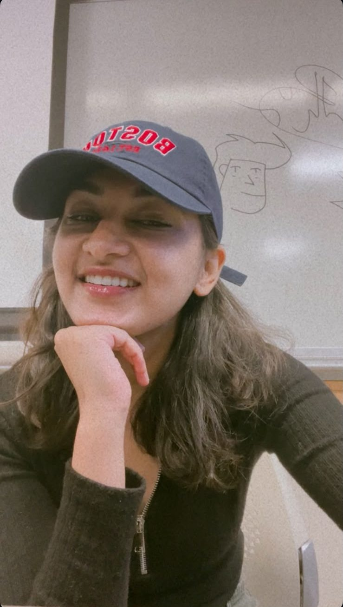
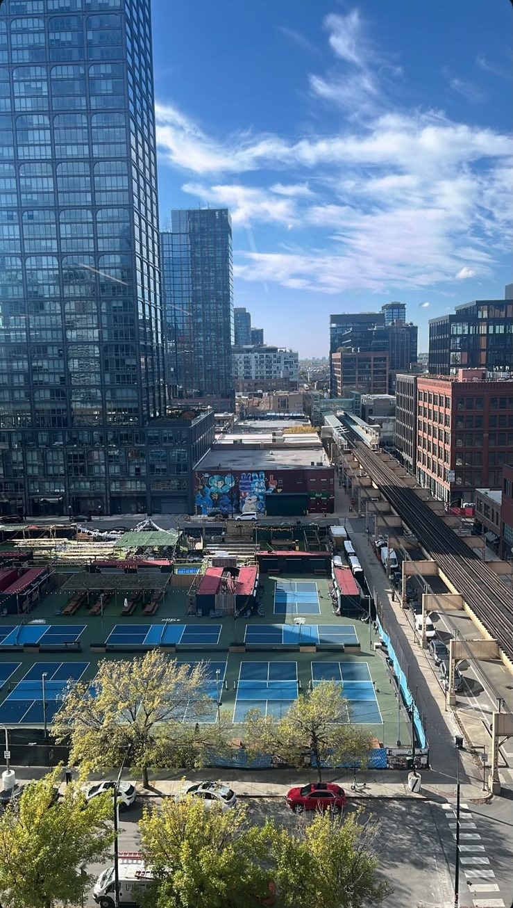

Personal
Off the clock
Boston is home base, but I'm happiest when I'm somewhere new. I spent the second half of 2025 in Chicago for my co-op at CCC, and the river at night became my favorite walk home.
I love long solo road trips, and recent ones took me to Los Angeles and San Francisco. Closer to home you'll find me at a table-tennis table or getting a swim in.
The same curiosity that sends me exploring a new city is what makes me want to dig one level deeper into the data.

